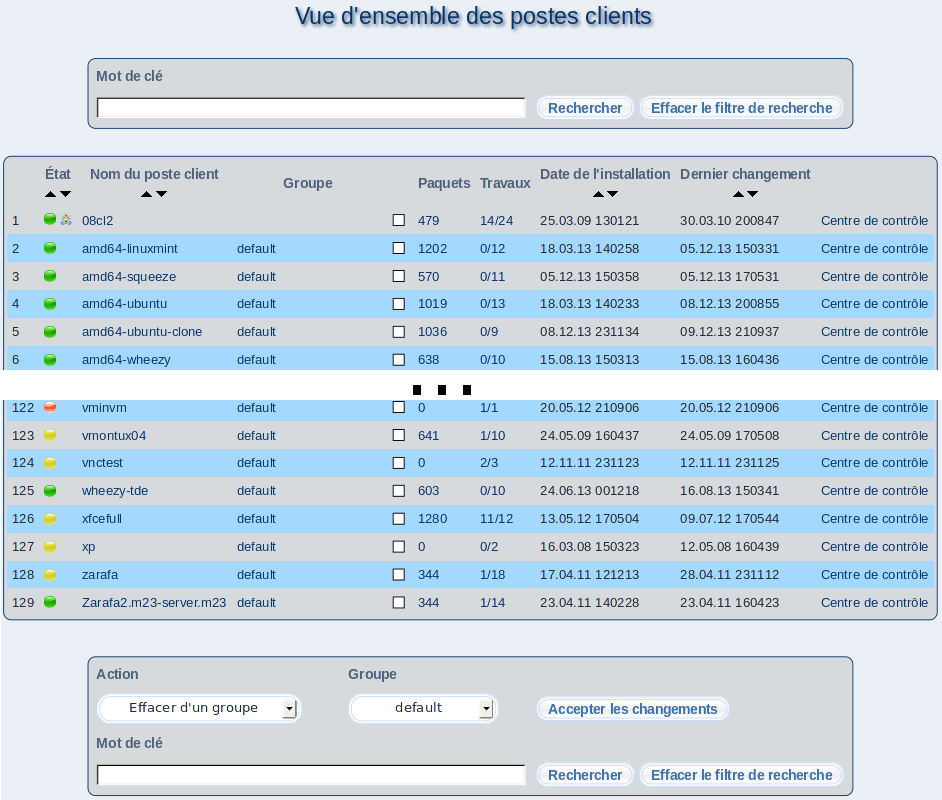

suivant:
Signification des couleurs symboliques
monter:
Administrer des clients
précédent:
Administrer des clients
Table des matières
Vue d'ensemble des postes client
Sur cette page, s'affiche une liste de vos postes client.

Lorsque vous cliquez sur le nom d'un client, s'afficheront des informations détaillées sur le client sélectionné; de plus, vous aurez accès au centre de contrôle.
Sous-sections
Signification des couleurs symboliques
Travaux
Travailler plusieurs postes clients
Notez
Astuces
root 2013-08-18